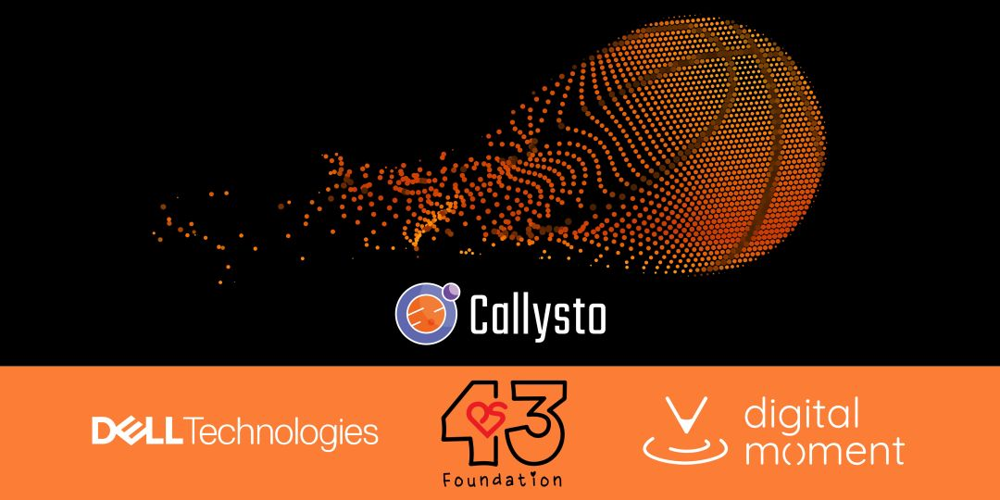

Welcome to the Data Dunkers Hackathon.
This hackathon is designed to help you build data literacy skills through a series of interactive activities. Each activity focuses on a specific topic, such as data visualizations, working with data, statistics and math, machine learning and AI, and critical thinking.
You can follow the suggested order or jump to any activity.
| Section | Lesson | Points | Summary |
|---|---|---|---|
| Introduction | Data Dunkers Introduction | 5 | A brief introduction to the Data Dunkers program. |
| Data Visualizations | Interpreting Scatterplots | 2 | Visualizations help you see relationships and trends. Learn how to read scatterplots and identify outliers. |
| Data Visualizations | Interpreting Line Graphs | 2 | Compare data trends over time. Track career scoring averages for WNBA legends Diana Taurasi and DeWanna Bonner. |
| Data Visualizations | Interpreting Bar Graphs | 2 | Learn how to read a bar graph and describe trends, clusters, and outliers. |
| Data Collection | Using Your Own Data - Shots | 20 | Compare your shooting performance to the class average. |
| Working with Data | Data Correlations | 3 | Finding correlations in data. |
| Data Visualizations | Interpreting Pie Charts | 2 | Learn how to read a pie chart and describe trends, clusters, and outliers. |
| Data Visualizations | Shot Charts | 3 | Explore shooting patterns by visualizing where players take shots on the court and their relative success rates. |
| Critical Thinking | Misleading Visualizations | 4 | Spot four common techniques used to distort data: adjusted axes, inverted axes, pie pull, and spurious correlations. |
| Data Visualizations | Interpreting Sunburst Plots | 3 | Learn how to read a sunburst plot and treemap plot. |
| Basketball Analysis | Basketball Metrics | 3 | Move beyond basic PPG to understand Efficiency (EFF) and True Shooting Percentage (TS%) for holistic player evaluation. |
| Basketball Analysis | Player Comparisons | 4 | Compare scoring volume vs. shooting efficiency across positions using bubble charts to understand player roles. |
| Data Collection | Using Your Own Data - Measurements | 20 | Collecting and analyzing your own data. |
| Statistics and Math | Regression Analysis | 4 | Independent and dependent variables, correlation and causation, interpolation and extrapolation. |
| Statistics and Math | Mean, Median, and Mode | 3 | Use measures of central tendency to find the "typical" value in scoring distributions for the Indiana Pacers roster. |
| Statistics and Math | Standard Deviation | 4 | Interpreting standard deviation. |
| Statistics and Math | Probability Basics | 4 | Understanding probability with simulations. |
| Working with Data | Synthetic Data | 4 | Generate and analyze hypothetical basketball player datasets using computer programs to test assumptions and models. |
| Machine Learning and AI | Ethical Considerations | 3 | Exploring ethical considerations. |
| Machine Learning and AI | LLM Data Analysis | 6 | Upload measurement data CSV to a large language model and use AI to find patterns, generate visualizations, and discover correlations. |
| Machine Learning and AI | Vibe Coding an Analysis App | 6 | Use an LLM to build a working data analysis web app without writing code, then test and improve it through conversation. |
| Project | Colab | Callysto | JupyterLite | Summary |
|---|---|---|---|---|
| Predicting Player Position | Open in Colab | Open in Callysto | Open in JupyterLite | Predict player position using machine learning. |
| Training Image Recognition | Open in Colab | Open in Callysto | Open in JupyterLite | Train an image recognition model to identify if an image is about basketball, baseball, or hockey. |
| Sentiment Analysis | Open in Colab | Open in Callysto | Open in JupyterLite | Using AI sentiment analysis with basketball statements. |
| Basketball Shots | Open in Colab | Open in Callysto | Open in JupyterLite | Analyze NBA shot data for the Toronto Raptors (2014-2024). Explore shot locations, distances, and success rates using Plotly scatterplots. |
| Baseball Pitches | Open in Colab | Open in Callysto | Open in JupyterLite | Identify pitch types and analyze characteristics like spin, speed, and location. |
| Open Data | Open in Colab | Open in Callysto | Open in JupyterLite | Introduction to using publicly available data from portals like Edmonton Open Data. Covers E-Scooters, Bike Counters, and Map visualization. |
| Pets | Open in Colab | Open in Callysto | Open in JupyterLite | Use pet adoption data to analyze time to adoption by species, gender, and age using bar graphs and pie charts. |
| Gapminder | Open in Colab | Open in Callysto | Open in JupyterLite | A series of challenges using real global data on population, life expectancy, and GDP to practice filtering and advanced visualizations. |
| Spotify | Open in Colab | Open in Callysto | Open in JupyterLite | Analyze music trends and track features using a Spotify dataset to find patterns in popular music. |
| Pokémon | Open in Colab | Open in Callysto | Open in JupyterLite | Explore a dataset of Pokémon to analyze their stats, types, and evolutionary relationships. |
| Data Challenges | Open in Colab | Open in Callysto | Open in JupyterLite | A comprehensive set of advanced challenges covering different datasets and data analysis techniques. |